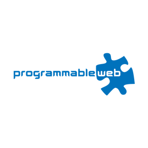

-
DEC 20, 2021
We’re Cursing More. Blame the #%$ Pandemic
-
MAY 22, 2017 - (PODCAST)
Interview with Brian Pontarelli from Inversoft
-
November 29, 2016
9News Tech Tuesday: Denver Company Keeps It Clean Online
-
November 26, 2016
Fake News Ruining Your Election? APIs and Apps Can Help with That
-
august 18, 2016
Bootstrapping as an engineer with Brian Pontarelli
-
February 26, 2016
Five User Management Trends For 2016
-
February 17, 2016
Steps To Becoming A Savvy Bootstrapper
-
February 9, 2016 - Podcast
How To Pursue Your Dreams Without Quitting Your Job
-
January 25, 2016 - Pocast
Online Community Software Must Improve Upon the Word Censor
-
January 15, 2016
How Branded Online Communities can Boost Your ROI (Infographic)
-
 January 11, 2016
January 11, 20163 Trends That Will Shake Up App Development in 2016
-
DECEMBER 1,2015
5 Reasons Why Businesses Should Build A Strong Online Community
-
SEPTEMBER 10,2015
Inside 3 of Colorado's Hottest and Sexiest New Tech Offices
-
June 10, 2015
Exploring Savant Build Tool with Inversoft's CEO
-
november 7, 2014
Entrepreneurship - No surprise for Brian Pontarelli